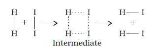
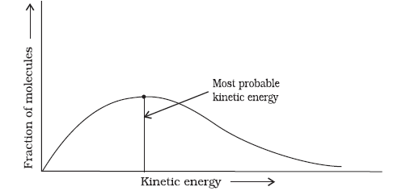

–
– 
4.5 Temperature Dependence of the Rate of a Reaction
Most of the chemical reactions are accelerated by increase in temperature. For example, in decomposition of N2O5, the time taken for half of the original amount of material to decompose is 12 min at 50oC, 5 h at 25oC and 10 days at 0oC. You also know that in a mixture of potassium permanganate (KMnO4) and oxalic acid (H2C2O4), potassium permanganate gets decolourised faster at a higher temperature than that at a lower temperature.
It has been found that for a chemical reaction with rise in temperature by 10°, the rate constant is nearly doubled.
The temperature dependence of the rate of a chemical reaction can be accurately explained by Arrhenius equation (4.18). It was first proposed by Dutch chemist, J.H. van’t Hoff but Swedish chemist, Arrhenius provided its physical justification and interpretation.
k = A e -Ea /RT (4.18)
where A is the Arrhenius factor or the frequency factor. It is also called pre-exponential factor. It is a constant specific to a particular reaction. R is gas constant and Ea is activation energy measured in joules/mole (J mol –1).
It can be understood clearly using the following simple reaction

Fig. 4.6: Formation of HI through the intermediate
According to Arrhenius, this reaction can take place only when a molecule of hydrogen and a molecule of iodine collide to form an unstable intermediate (Fig. 4.6). It exists for a very short time and then breaks up to form two molecules of hydrogen iodide.
The energy required to form this intermediate, called activated complex (C), is known as activation energy (Ea). Fig. 4.7 is obtained by plotting potential energy vs reaction coordinate. Reaction coordinate represents the profile of energy change when reactants change into products.
Some energy is released when the complex decomposes to form products. So, the final enthalpy of the reaction depends upon the nature of reactants and products.
All the molecules in the reacting species do not have the same kinetic energy. Since it is difficult to predict the behaviour of any one molecule with precision, Ludwig Boltzmann and James Clark Maxwell used statistics to predict the behaviour of large number of molecules. According to them, the distribution of kinetic energy may be described by plotting the fraction of molecules (NE/NT) with a given kinetic energy (E) vs kinetic energy (Fig. 4.8). Here, NE is the number of molecules with energy E and NT is total number of molecules.
Fig. 4.7: Diagram showing plot of potential energy vs reaction coordinate.

Fig. 4.8: Distribution curve showing energies among gaseous molecules
Fig. 4.9: Distribution curve showing temperature dependence of rate of a reaction
The peak of the curve corresponds to the most probable kinetic energy, i.e., kinetic energy of maximum fraction of molecules. There are decreasing number of molecules with energies higher or lower than this value. When the temperature is raised, the maximum of the curve moves to the higher energy value (Fig. 4.9) and the curve broadens out, i.e., spreads to the right such that there is a greater proportion of molecules with much higher energies. The area under the curve must be constant since total probability must be one at all times. We can mark the position of Ea on Maxwell Boltzmann distribution curve (Fig. 4.9).
Increasing the temperature of the substance increases the fraction of molecules, which collide with energies greater than Ea. It is clear from the diagram that in the curve at (t + 10), the area showing the fraction of molecules having energy equal to or greater than activation energy gets doubled leading to doubling the rate of a reaction.
In the Arrhenius equation (4.18) the factor e -Ea /RT corresponds to the fraction of molecules that have kinetic energy greater than Ea. Taking natural logarithm of both sides of equation (4.18)
ln k = – + ln A (4.19)
The plot of ln k vs 1/T gives a straight line according to the equation (4.19) as shown in Fig. 4.10.
Thus, it has been found from Arrhenius equation (4.18) that increasing the temperature or decreasing the activation energy will result in an increase in the rate of the reaction and an exponential increase in the rate constant.
In Fig. 4.10, slope = – and intercept = ln A. So we can calculate Ea and A using these values.
At temperature t1, equation (4.19) is
ln k1 = – + ln A (4.20)
At temperature t2, equation (4.19) is
ln k2 = – + ln A (4.21)
(since A is constant for a given reaction)
k1 and k2 are the values of rate constants at temperatures t1 and t2 respectively.
Subtracting equation (4.20) from (4.21), we obtain
ln k2 – ln k1 = –
(4.22)
Fig. 4.10: A plot between ln k and 1/T
Example 4.10
The rate constants of a reaction at 500K and 700K are 0.02s–1 and 0.07s–1 respectively. Calculate the values of Ea and A.
Solution
Example 4.11
The first order rate constant for the decomposition of ethyl iodide by the reaction
C2H5I(g) ® C2H4 (g) + HI(g)
at 600K is 1.60 × 10–5 s–1. Its energy of activation is 209 kJ/mol. Calculate the rate constant of the reaction at 700K.
Solution
We know that
4.5.1 Effect of Catalyst
A catalyst is a substance which increases the rate of a reaction without itself undergoing any permanent chemical change. For example, MnO2 catalyses the following reaction so as to increase its rate considerably.
2KClO3 2 KCl + 3O2
The word catalyst should not be used when the added substance reduces the rate of raction. The substance is then called inhibitor. The action of the catalyst can be explained by intermediate complex theory. According to this theory, a catalyst participates in a chemical reaction by forming temporary bonds with the reactants resulting in an intermediate complex. This has a transitory existence and decomposes to yield products and the catalyst.
It is believed that the catalyst provides an alternate pathway or reaction mechanism by reducing the activation energy between reactants and products and hence lowering the potential energy barrier as shown in Fig. 4.11.
"

Fig. 4.11: Effect of catalyst on activation energy
It is clear from Arrhenius equation (4.18) that lower the value of activation energy faster will be the rate of a reaction.
A small amount of the catalyst can catalyse a large amount of reactants. A catalyst does not alter Gibbs energy, ∆G of a reaction. It catalyses the spontaneous reactions but does not catalyse non-spontaneous reactions. It is also found that a catalyst does not change the equilibrium constant of a reaction rather, it helps in attaining the equilibrium faster, that is, it catalyses the forward as well as the backward reactions to the same extent so that the equilibrium state remains same but is reached earlier.